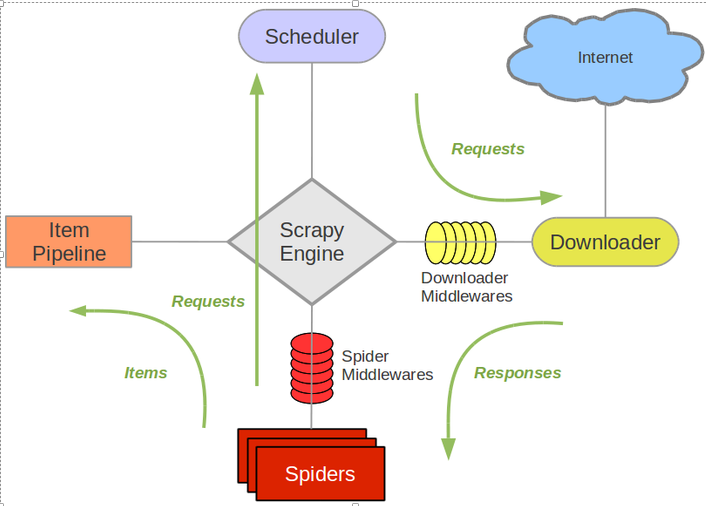
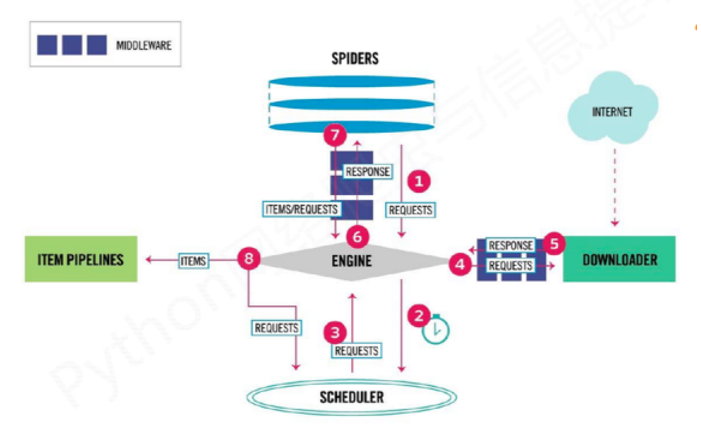
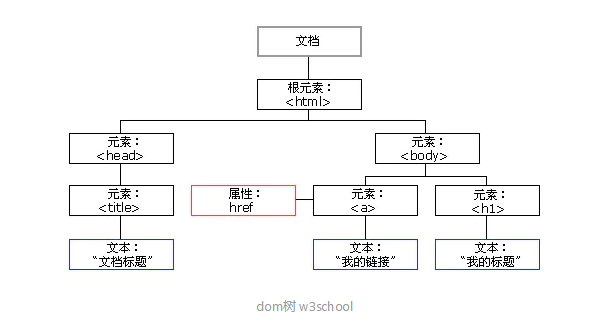

个人简介： wedo实验君, 数据分析师；热爱生活，热爱写作
scrapy是基于事件驱动的Twisted框架下用纯python写的爬虫框架。很早之前就开始用scrapy来爬取网络上的图片和文本信息，一直没有把细节记录下来。这段时间，因为工作需要又重拾scrapy爬虫，本文和大家分享下，包你一用就会， 欢迎交流。
scrapy框架包括5个主要的组件和2个中间件Hook。
DOWNLOADER返回的网页内容，同时和数据持久化进行交互,需要开发者编写SPIDERS解析的结构化的字段，进行持久化等操作，需要开发者编写ENGIINE和SPIDERS, ENGIINE和DOWNLOADER之间一些额外的操作，hook的方式提供给开发者从上可知，我们只要实现SPIDERS（要爬什么网站，怎么解析）和ITEM PIPELINES（如何处理解析后的内容）就可以了。其他的都是有框架帮你完成了。（图片来自网络，如果侵权联系必删）

我们再详细看下组件之间的数据流，会更清楚框架的内部运作。（图片来自网络，如果侵权联系必删）

SPIDERS发爬虫请求给ENGIINE， 告诉它任务来了ENGIINE将请求添加到SCHEDULER调度队列里, 说任务就交给你了，给我安排好SCHEDULER看看手里的爬取请求很多，挑一个给ENGIINE， 说大哥帮忙转发给下载DOWNLOADERENGIINE： 好的， DOWNLOADER你的任务来了DOWNLOADER： 开始下载了，下载好了，任务结果 交给ENGIINEENGIINE将结果给SPIDERS， 你的一个请求下载好了，快去解析吧SPIDERS： 好的，解析产生了结果字段。又给SPIDERS转发给ITEM PIPELINESITEM PIPELINES: 接收到字段内容，保存起来。第1步到第8步，一个请求终于完成了。是不是觉得很多余？ENGIINE夹在中间当传话筒，能不能直接跳过？ 可以考虑跳过了会怎么样。
这里分析一下
SCHEDULER的作用： 任务调度， 控制任务的并发，防止机器处理不过来ENGIINE： 就是基于Twisted框架, 当事件来（比如转发请求）的时候，通过回调的方式来执行对应的事件。我觉得ENGIINE让所有操作变的统一，都是按照事件的方式来组织其他组件， 其他组件以低耦合的方式运作； 对于一种框架来说，无疑是必备的。写爬虫最重要的是解析网页的内容，这个部分就介绍下通过XPath来解析网页，提取内容。
（图片来自网络，如果侵权联系必删）

一个例子
response.xpath('//div[@class="taglist"]/ul//li//a//img/@data-original').get_all()
# 获取所有class属性（css）为taglist的div， 下一个层ul下的所有li下所有a下所有img标签下data-original属性
# data-original这里放的是图片的url地址
更多详见
http://zvon.org/comp/r/tut-XPath_1.html#Pages~List_of_XPaths
Scrapy 是用纯python编写的，它依赖于几个关键的python包（以及其他包）：
# 安装
pip install scrapy
scrapy startproject sexy
# 创建一个后的项目目录
# sexy
# │ scrapy.cfg
# │
# └─sexy
# │ items.py
# │ middlewares.py
# │ pipelines.py
# │ settings.py
# │ __init__.py
# │
# ├─spiders
# │ │ __init__.py
# │ │
# │ └─__pycache__
# └─__pycache__
# 执行 需要到scrapy.cfg同级别的目录执行
scrapy crawl sexy
从上可知，我们要写的是spiders里的具体的spider类和items.py和pipelines.py（对应的ITEM PIPELINES）
这里实现的功能是从图片网站中下载图片，保存在本地， url做了脱敏。需要注意的点在注释要标明
scrapy.Spiderparse利用xpath解析reponse的内容可以看到parse实现的时候没有转发给ITEM PIPELINES，直接处理了。这样简单的可以这么处理，如果业务很复杂，建议交给ITEM PIPELINES。 后面会给例子
# 目录结果为：spiders/sexy_spider.py
import scrapy
import os
import requests
import time
def download_from_url(url):
response = requests.get(url, stream=True)
if response.status_code == requests.codes.ok:
return response.content
else:
print('%s-%s' % (url, response.status_code))
return None
class SexySpider(scrapy.Spider):
# 如果有多个spider， name要唯一
name = 'sexy'
allowed_domains = ['uumdfdfnt.94demo.com']
allowed_urls = ['http://uumdfdfnt.94demo.com/']
# 需要爬取的网站url加到start_urls list里
start_urls = ['http://uumdfdfnt.94demo.com/tag/dingziku/index.html']
save_path = '/home/sexy/dingziku'
def parse(self, response):
# 解析网站，获取图片列表
img_list = response.xpath('//div[@class="taglist"]/ul//li//a//img/@data-original').getall()
time.sleep(1)
# 处理图片， 具体业务操作， 可交给items， 见5.2 items例子
for img_url in img_list:
file_name = img_url.split('/')[-1]
content = download_from_url(img_url)
if content is not None:
with open(os.path.join(self.save_path, file_name), 'wb') as fw:
fw.write(content)
# 自动下一页（见5.3 自动下一页）
next_page = response.xpath('//div[@class="page both"]/ul/a[text()="下一页"]/@href').get()
if next_page is not None:
next_page = response.urljoin(next_page)
yield scrapy.Request(next_page, callback=self.parse)
这里说明下两个的作用
我们来改写下上面的例子
scrapy.Field()import scrapy
class SexyItem(scrapy.Item):
# define the fields for your item here like:
# name = scrapy.Field()
img_url = scrapy.Field()
import scrapy
import os
# 导入item
from ..items import SexyItem
class SexySpider(scrapy.Spider):
# 如果有多个spider， name要唯一
name = 'sexy'
allowed_domains = ['uumdfdfnt.94demo.com']
allowed_urls = ['http://uumdfdfnt.94demo.com/']
# 需要爬取的网站url加到start_urls list里
start_urls = ['http://uumdfdfnt.94demo.com/tag/dingziku/index.html']
save_path = '/home/sexy/dingziku'
def parse(self, response):
# 解析网站，获取图片列表
img_list = response.xpath('//div[@class="taglist"]/ul//li//a//img/@data-original').getall()
time.sleep(1)
# 处理图片， 具体业务操作， 可交给yield items
for img_url in img_list:
items = SexyItem()
items['img_url'] = img_url
yield items
import os
import requests
def download_from_url(url):
response = requests.get(url, stream=True)
if response.status_code == requests.codes.ok:
return response.content
else:
print('%s-%s' % (url, response.status_code))
return None
class SexyPipeline(object):
def __init__(self):
self.save_path = '/tmp'
def process_item(self, item, spider):
if spider.name == 'sexy':
# 取出item里内容
img_url = item['img_url']
# 业务处理
file_name = img_url.split('/')[-1]
content = download_from_url(img_url)
if content is not None:
with open(os.path.join(self.save_path, file_name), 'wb') as fw:
fw.write(content)
return item
settings.py中开启piplines类，数值表示优先级ITEM_PIPELINES = {
'sexy.pipelines.SexyPipeline': 300,
}
有时候我们不仅要爬取请求页面中的内容，还要递归式的爬取里面的超链接url，特别是下一页这种，解析内容和当前页面相同的情况下。一种笨方法是手动加到start_urls里。大家都是聪明人来试试这个。
完美了，完整例子见5.1
next_page = response.xpath('//div[@class="page both"]/ul/a[text()="下一页"]/@href').get()
if next_page is not None:
next_page = response.urljoin(next_page)
yield scrapy.Request(next_page, callback=self.parse)
middlewares.py。可以看到主要是处理请求process_request，响应process_response和异常process_exception三个钩子函数。process_request: 传给DOWNLOADER之前做的操作process_response：DOWNLOADER给ENGIINE响应之前的操作这里举一个添加模拟浏览器请求的方式，防止爬虫被封锁。重写process_request
from scrapy.contrib.downloadermiddleware.useragent import UserAgentMiddleware
import random
agents = ['Mozilla/5.0 (compatible; MSIE 9.0; Windows NT 6.1; Trident/5.0;',
'Mozilla/5.0 (Macintosh; Intel Mac OS X 10.6; rv,2.0.1) Gecko/20100101 Firefox/4.0.1',
'Opera/9.80 (Macintosh; Intel Mac OS X 10.6.8; U; en) Presto/2.8.131 Version/11.11',
'Mozilla/5.0 (Macintosh; Intel Mac OS X 10_7_0) AppleWebKit/535.11 (KHTML, like Gecko) Chrome/17.0.963.56 Safari/535.11',
'Mozilla/4.0 (compatible; MSIE 7.0; Windows NT 5.1; 360SE)']
class RandomUserAgent(UserAgentMiddleware):
def process_request(self, request, spider):
ua = random.choice(agents)
request.headers.setdefault('User-agent',ua,)
统一要在settings.py中开启下载中间件，数值表示优先级
DOWNLOADER_MIDDLEWARES = {
'sexy.middlewares.customUserAgent.RandomUserAgent': 20,
}
settings.py除了上面提供的pipline配置开启和中间件配置外，下面介绍几个常用的配置
所有的配置详见 https://doc.scrapy.org/en/latest/topics/settings.html
相信从上面的介绍，你已经可以动手写一个你自己的爬虫了。我也完成了做笔记的任务了。scrapy还提供更加详细的细节，可参见https://docs.scrapy.org/en/latest/。
最后总结如下：
ENGIINE是核心，负责串起其他组件